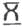
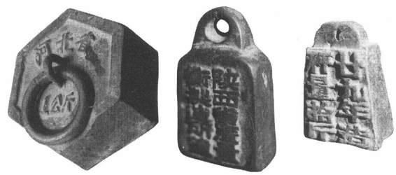
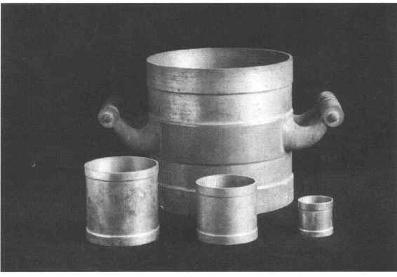

1840年鸦片战争以后，中国逐步沦为半殖民地半封建社会，由于外国经济的侵略，各国度量衡也纷纷传入，对我国度量衡产生了直接的影响，使它带上了很深的半殖民地性质。清政府无法抵制各国度量衡制度在我国使用，也无力统一国内的度量衡，因此造成度量衡从制度到器具等各方面都极度紊乱。
道光以后，中外通商日趋频繁，为了便于稽查和征收进出口货税，清政府设立了通商海关。根据道光二十七年《中国瑞典挪威贸易章程》第十二款规定，瑞典、挪威等国各口岸领事馆所用度量衡均以粤海关定式为标准，由“中国海关发给丈尺秤码各一副，以备丈量长短权衡轻重之用”［143］。广州、厦门、福州、宁波、上海等五个通商口岸一律依照粤海关部颁之式盖戳镌字，以保证量值统一，并要求各海关监督所在口岸送交领事馆照此划一。然而帝国主义并不满足于清政府开放海禁，为了在中国攫取更多的资产，各国均觊觎着控制中国的海关大权。咸丰八年（1858）天津条约订立之后，各约所附的通商章程皆规定请外国人帮助办理税务，从此海关大权旁落。自咸丰九年英国人李泰国被任命为中国海关总税务司后，从此中国的海关被帝国主义所把持：海关衙门既不在中国行政系统之内，海关上使用的度量衡币制亦不在中国法律规定之内，各国借口我国度量衡庞杂纷乱，漫无一定，另设专款规定互相折合的办法，自此在中国度量衡史上出现了丧权辱国的海关度量衡，即所谓海关尺和关平秤。
通商条约规定度量衡互相折合办法，大致可分为英制和法制两种。英、美、丹麦、比利时等国属英制；法、意、德、奥地利等国属法制。英制折算标准为：中国之100斤合英制的133磅零1／3磅，折合1关平斤为605.3克；中国之1丈合141.1英寸，折合1海关尺为35.8厘米。法制折算标准为：中国之100斤合法制60公斤零453克，折合1关平斤为604.5克；中国之1丈合3.058厘米，折合1海关尺为35.8厘米。［144］可见由英、法两种度量衡制折算的海关度量衡单位量值亦不一致，所谓海关度量衡既不是当时清政府法定的营造库平制，也不完全合于各国当时行用的制度，故海关度量衡制本身标准不定，早已不成其为独立的制度，却从另一个方面反映出我国海关主权的丧失和半殖民地化加深这一历史事实。
随着清王朝的被推翻，度量衡的改革也进入一个新时期。从国际形势来看，自1795年法国政府颁布以米制为标准之后，世界上采用米制的国家日益增多，至1875年3月1日，法国政府召集了“米制外交会议”，二十多个国家派出了政府代表与科学家出席会议，正式签署了“米制公约”。国内形势是，鸦片战争后，我国度量衡无一定准则，制度混乱。民国初立，是彻底改革的极好时机，工商部经反复讨论，均认为适应世界潮流，直接采用米制，既可统一全国混乱的制度，又可消除对外贸易的障碍，并拟在十年内将米制推行全国。后因考虑到公尺过长，公斤过重，完全废除营造尺库平制而直接采用米制，恐与我国数千年之民情习俗相背离而不易被接受，故仿效美、英等国的办法，本国度量衡制与米制兼用，确定营造尺库平制和米制两制并行。1915年北洋政府制定《权度法》如下：
①权度以万国权度公会所制定铂铱公尺、公斤原器为标准。
②权度分为下列两种：
营造尺库平制简称甲制：长度以营造尺一尺为单位，重量以库平一两为单位，营造尺一尺等于公尺原器在百度寒暑表零度时首尾两标点间百分之三十二（即32厘米），库平一两等于公斤原器百万分之三七三零一（即37.301克）。
米制简称为乙制：长度以一公尺为单位，重量以一公斤为单位。一公尺等于公尺原器在百度寒暑表零度时首尾两标点间之长，一公斤等于公斤原器之重。
甲乙两制同为法定制度，而甲制为过渡时期的辅制，甲制的比例折合均以米制为标准。
《权度法》公布后又设立权度制造所和权度检定所，并以北京为推行的试点，为全国作出模范，派遣检定人员到各商铺将所有度量衡旧器与法定之器一一比较，凡合于法定营造尺库平制各器，即錾盖字图印，准其行用，不合法定之器具一律錾盖式字图印，只准使用至规定换用新器之日为止。此后各省市也曾积极采取各种措施，力争推行新法。然而由于当时政局不稳，号令不行，计划不周，经费不足等原因，新制实际上未能在全国推行。［145］
1927年南京政府成立，国民政府每每感到度量衡关系到国家政治及人民福利，再次提出划一度量衡议案，随即组织度量衡标准委员会进行度量衡标准的研究，组织各方面人士先后提出几种方案，最主要的不过以下两种：费德朗、刘晋钰等人提案完全推翻公制，根据中国习惯规定独立的国制。另一种是，徐善祥、吴承洛等人认为，我国自与外国通商以来，外商在华势力日趋增大，为了发展民族工商业，采用各国通行的米制是划一度量衡的唯一出路。为考虑我国国民之习惯，民国四年《权度法》虽亦提出两制并用，但甲乙两制因无简单的比例，致使不能通行全国，因此提议完全采用公制，并以市用制为辅制，市用制既概略地沿用了中国度量衡制（即营造尺库平制）的量值，又与米制的量值有简单并约略相合的比率。经国会反复讨论，一致同意吴承洛等人的议案，于民国十七年以《中华民国权度标准方案》予以公布，主要内容如下：
①标准制定万国公制（即米突制）为中华民国权度之标准制。长度，以一公尺（即米突尺）为标准尺；容量，以一公升（即一立特或一千立方生的米突）为标准升；［146］重量，以一公斤（一千格兰姆）为标准斤。
②市用制以与标准制有最简单之比率而与民间习惯相近者为市用制。长度，以标准尺三分之一为市尺，计算面积以六千平方市尺为亩；容量，即以一标准升为升；重量，以标准斤二分之一为市斤（即500格兰姆），一斤为十六两（每两等于31格兰姆又四分之一）。
《中华民国权度标准方案》公布后，为了保证实施，由中央各部与全国商会联合组织度量衡推行委员会，制定了全国度量衡划一程序，公布《度量衡法》。根据度量衡法将全国各区域按交通、经济发展的不同情况分地区、分期、分器逐步推行公制和市用制。（图16—38、图16—39）成立全国度量衡局，掌管全国度量衡行政事务，扩充度量衡制造和度量衡检定人员养成所，负责制造度量衡标准器和培训检定人员，又在度量衡法的基础上制定了实施细则。当时推行新制计划之周密，决心之大可见一斑。然而，由于国民经济衰败，工业、科学技术以及教育事业凋零，米制未能在全国推行（根据《度量衡法》第11条：“凡有度量衡之事项，除私人买卖交易得暂行市用制外，均应用公制”［147］），只是与人民生活有密切关系地市用制，在各省市商业行会促进下通行起来。这次的度量衡划一运动，有效地遏制了清末民国初以来，度量衡的极度混乱状况。为我国度量衡制与国际接轨、最终走向公制，奠定了良好的基础。

图16-38 中华民国时期的砝码与秤砣

图16-39 中华民国时期的标准量器
［1］ 《尚书正义》卷三《虞书·舜典》，《十三经注疏》本，中华书局，1983，第127页。
［2］ 《史记》卷二《夏本纪》，中华书局标点本，1975，第51页。
［3］ 《礼记正义》卷三一《明堂位》，《十三经注疏》本，第1488页。
［4］ 汪遵国《良渚文化·“玉殓葬”述略》，《文物》1984年2期。
［5］ 赵建龙《大地湾古量器及分配制度初探》，《考古与文物》1992年6期。
［6］ 《尸子》卷下《四部备要》本，中华书局，1936，第19页。
［7］ 《史记》卷二《夏本纪》，第51页。
［8］ 《周髀算经》卷上《四库全书》本第786册，台湾商务印书馆，1986，第6页。
［9］ 王嘉《拾遗记》卷三《夏禹》，中华书局，1981，第38页。
［10］ 罗福颐《传世历代古尺图录》，文物出版社，1957。
［11］ 《孔子家语》卷一《王言》，《四库全书》本，第695册，第8页。
［12］ 参见段玉裁《说文解字注》，上海古籍出版社，1981，第698页。
［13］ 《天津市新收集的商周青铜器》，《文物》1964年，第9期。
［14］ 《春秋左传正义》卷五七，《十三经注疏》本，第2154页。
［15］ 《郭沫若全集》（历史卷）第三卷，人民出版社，1984，第6页。
［16］ 唐兰《陕西省岐山县董家村新出西周重要铜器铭辞的译文和注释》，《文物》1976年，第5期。
［17］ 《毛诗正义》卷一九《周颂·噫嘻》，《十三经注疏》本，第591—592页。
［18］ 《毛诗正义》卷五《国风·十亩之间》，《十三经注疏》本，第358页。
［19］ 《毛诗正义》卷一三《小雅·北山》，《十三经注疏》本，第463页。
［20］ 《礼记正义》卷一二《王制》，《十三经注疏》本，第1338页。
［21］ 《通志》卷六一《食货》，浙江古籍出版社，1988，第736页。
［22］ 《孟子正义》卷五《滕文公章句上》，《诸子集成》本，中华书局，1986，第197页。
［23］ 《孟子正义》卷五《滕文公章句》上，《诸子集成》本，第213页。
［24］ 北京大学历史系考古商周组《商周考古》，文物出版社，1979，第58—59页。
［25］ 《国语》卷三《周语》下，《四库备要》本，中华书局，1936，第24页。
［26］ 《史记》卷二《夏本纪》，第79页。
［27］ 《春秋左传正义》卷五四《定公元年》，《十三经注疏》本，第2131页。
［28］ 《管子校正》卷二〇《形势解》，《诸子集成》本，第327页。
［29］ 《周礼注疏》卷三九《冬官考工记》，《十三经注疏》本，第907—909页，参见闻人军《考工记导读》，巴蜀书社，1987，第222—224页。
［30］ 《吕氏春秋》卷一六《先识览·察微》，《诸子集成》本，第193页。
［31］ 详见《周礼注疏》卷一四《地官司徒·司市》，《十三经注疏》本，第734—737页。
［32］ 《战国策》卷一三《齐策六》，上海古籍出版社，1978，第456页。
［33］ 《管子校正》卷三，《诸子集成》本，第39页。
［34］ 《管子校正》卷十，《诸子集成》本，第166页。
［35］ 《管子校正》卷二，《诸子集成》本，第28页。
［36］ 《孟子正义》卷五《滕文公章句上》，《诸子集成》本，第234页。
［37］ 原文见《太平御览》卷八一〇《金》引《晋永和起居注》中华书局影印本，1992，第3598页。
［38］ 胡道静《梦溪笔谈校正》卷二一《异事》，上海出版公司，1956，第680页。
［39］ 安志敏《金版与金饼》，《考古学报》1973年第2期。
［40］ 高至喜《湖南楚墓中出土的天平砝码》，《考古》1972年第4期。
［41］ 原文见《春秋左传集解》，上海人民出版社，1977，第1218—1219页。
［42］ 《齐量》，上海博物馆，1959。
［43］ 丘光明《中国历代度量衡考》，科学出版社，1992，第132—134页。
［44］ 《唐兰先生全文集》，《“商鞅量”与“商鞅量尺”》，紫禁城出版社，1995，第25—30页。
［45］ 原文见《睡虎地云梦竹简》，文物出版社，1978。
［46］ 高亨《商君书注译》，中华书局，1974，第110页。
［47］ 《墨子间诂》卷一五，《诸子集成》本，第369页。
［48］ 《睡虎地秦墓竹简》，第113—114页。
［49］ 《睡虎地秦墓竹简》，第70页。
［50］ 原文见《睡虎地秦墓竹简》，第108页。
［51］ 《吕氏春秋》卷八，《诸子集成》本，第12、76页。
［52］ 原文见《汉书》卷二一《律历志》，中华书局标点本，1975，第966页。
［53］ 丘光明《中国物理学史大系·计量史卷》，湖南教育出版社，1902，第244页。
［54］ 原文见《汉书》卷二一《律历志》，第967—968页。
［55］ 戴震《考工记图》，商务印书馆，1955，第51—55页。
［56］ 原文见《隋书》卷一六《律历志》，中华书局标点本，1973，第387—388页。
［57］ 原文见《汉书》卷二一《律历志》，第969—971页。
［58］ 《汉书》卷二四《食货志》，第1149页。
［59］ 《后汉书》志第五《礼仪》中，第3125页。
［60］ 十二律名：黄钟、太簇、古洗、蕤宾、夷则、无射、林钟、南吕、应钟、大吕、夹吕、仲吕。
［61］ 朱载堉《律吕精义·序》，《中国科学技术典籍通汇·物理卷》，河南教育出版社，1995，第99页。
［62］ 蔡邕《月令章句》，引自《太平御览》卷一六《时序部·律》，第81页。
［63］ 《周易正义》卷七《系辞》上，《十三经注疏》本，第83页。
［64］ 蔡邕《月令章句》，引自《太平御览》卷十六，第81—82页。
［65］ 《宋史》卷七一《律历》，中华书局标点本，1977，第1608页。
［66］ 马衡《凡将斋金石丛稿》，中华书局，1977，第26页。
［67］ 谭戒甫《墨辩发微》，中华书局，1977，第261页。
［68］ 钱临照《释墨经中光学·力学诸条》，《科学史论文集》，中国科技大学，1986。
［69］ 《国语》卷三《周语》下，上海古籍出版社，1976，第124页。
［70］ 陈淳《北溪字义》卷下《经权》，《四库全书》本第709册，第41页。
［71］ 丘光明《我国古代权衡器简论》，《文物》1984年第10期。
［72］ 《隋书》卷一六《律历志》，第386页。
［73］ 同上书，第404页。
［74］ 《晋书》卷一六《律历志》，第490页。
［75］ 《隋书》卷一六《律历志》，第404页。
［76］ 《晋书》卷一六《律历志》，第491页。
［77］ 《隋书》卷一六《律历志》，第386页。
［78］ 《晋书》卷一六《律历志》，第492页。
［79］ 详见丘光明《中国物理学史大系·计量史卷》，第305页。
［80］ 《隋书》卷一六《律历志》，第406页。
［81］ 详见丘光明《中国物理学史大系·计量史卷》，第315—317页。
［82］ 详见丘光明《中国物理学史大系·计量史卷》，第312页。
［83］ 《隋书》卷一六《律历上》，第410—412页。
［84］ 详见丘光明《中国物理学史大系·计量史卷》，第318—319页。
［85］ 《春秋左传正义》卷五五《十三经注疏》本，第2141页。
［86］ 杜佑《通典》卷五《食货》，第29页。
［87］ 《北史》卷一《魏本纪》，第1页。
［88］ 《魏书》卷二《太祖纪》，第33页。
［89］ 《魏书》卷一一〇《食货志》，第2852页。
［90］ 《魏书》卷七下《高祖纪》，第178页。
［91］ 详见《魏书》卷七八《张普惠传》，第1736—1737页。
［92］ 顾炎武《日知录某解》卷一一《权量》，康熙三十四年遂初堂刊本。
［93］ 《隋书》卷一六《律历志》，第410—412页。
［94］ 同上书，第407页。
［95］ 《古今图书集成》第782册，《考工典》，第22页。
［96］ 《唐六典》卷三《尚书·启部》，中华书局，1992，第81页。
［97］ 王国维《日本奈良正仓院藏唐尺摹本跋》，《观堂集林》卷一九，《史林》，1923。
［98］ 详见《唐律疏议》卷二九《杂律上》，从书集成本，第619—621页。
［99］ 《宋史》卷六八《律历志》，第1495页。
［100］ 《宋史》卷一三一《乐六》，第3055页。
［101］ 《梦溪笔谈校正》，上海出版公司，1956，第961页。
［102］ 蔡元定《律吕新书》卷二《权衡度量》，“四库全书”本，第212册，第42页。
［103］ 《宋会要辑稿·乐一之五》，中华书局，1957，第282页。
［104］ 《梦溪笔谈校正》，第155页。
［105］ 原文详见《宋史》卷六八《律历志》，第1495页。
［106］ 《宋会要辑稿·乐一之五》，第282页。
［107］ 《元史》卷一二五《高智跃传》，第3073页。
［108］ 杨平《从元代官印看元代尺度》，《考古》1997年第8期。
［109］ 《辽史》卷五四《乐志》，第885页。
［110］ 《金史》卷三九《乐志》，第883页。
［111］ 《元史》卷四八《天文志》，第989页。
［112］ 同上书，第996页。
［113］ 《元史》卷九三《食货志》，第2359页。
［114］ 俞正燮《癸巳存稿》卷一〇《石斗升》，《丛书集成》本。
［115］ 李文信《义县清河门辽墓发掘报告》，《考古学报》1954，第8册。
［116］ 详见丘光明《中国物理史大系·计量史卷》，第483页。
［117］ 同上书，第455—456页。
［118］ 《元典章》卷五七《刑部·诸禁·杂禁》光绪三十四年刊本，第51页。
［119］ 丘光明《中国历代度量衡考》，科学出版社，1992，第476页。
［120］ 《宋史》卷六八《律历志》，第1497页。
［121］ 戴念祖《朱载堉——明代科学和艺术巨星》，人民出版社，1986，第209—211页。
［122］ 朱载堉《律吕精义外编》卷之一，《中国科学技术典籍通汇》，第325页。
［123］ 朱载堉《律学新说》卷之二，第32页。
［124］ 《明会典》卷三七《课程六·权量》，第270页。
［125］ 丘光明《中国历代度量衡考》，第260页。
［126］ 丘光明《中国物理学史大系·计量史卷》，第513—519页。
［127］ 丘光明《中国物理学史大系·计量史卷》，第527—529页。
［128］ 录自《清朝文献通考》卷一五七《乐三》，浙江古籍出版社影印本，1988，第6227页。
［129］ 《清朝文献通考》卷一六〇《乐六》，第6256页。
［130］ 《清朝文献通考》卷一五七《乐三》，第6227页。
［131］ 同上。
［132］ 同上。
［133］ 丘光明《中国历代度量衡考》，第117—118页。
［134］ 《清朝文献通考》卷一六〇《乐六》，第6255页。
［135］ 《清会典事例》卷一八〇《户部·权量》，商务印书馆，1909，第7463页。
［136］ 《清朝文献通考》卷一六〇《乐六》，第6256页。
［137］ 同上书，第6257页。
［138］ 同上。
［139］ 丘光明《中国历代度量衡考》，第264页。
［140］ 《律吕正义后编》卷一一三《度量衡考》，第21页。
［141］ 《清会典》卷五九《工部》，中华书局，1991，第550页。
［142］ 《划一度量衡图说总表及推行章程》，光绪三十四年（1908）刊本，第1—2页。
［143］ 转引自王铁崖编《中外旧约章汇编》第1册，三联书店，1957，第73页。
［144］ 详见丘光明《中国物理学史大系·计量史卷》，第551—552页。
［145］ 吴承洛《中国度量衡史》，商务印书馆，1937，第316页。
［146］ “生的米突”为“centimetre”音译，今译为立方厘米。
［147］ 民国实业部全国度量衡局编《全国度量衡划一概况》第七章《新制度量衡推行计划》，南京，1933。